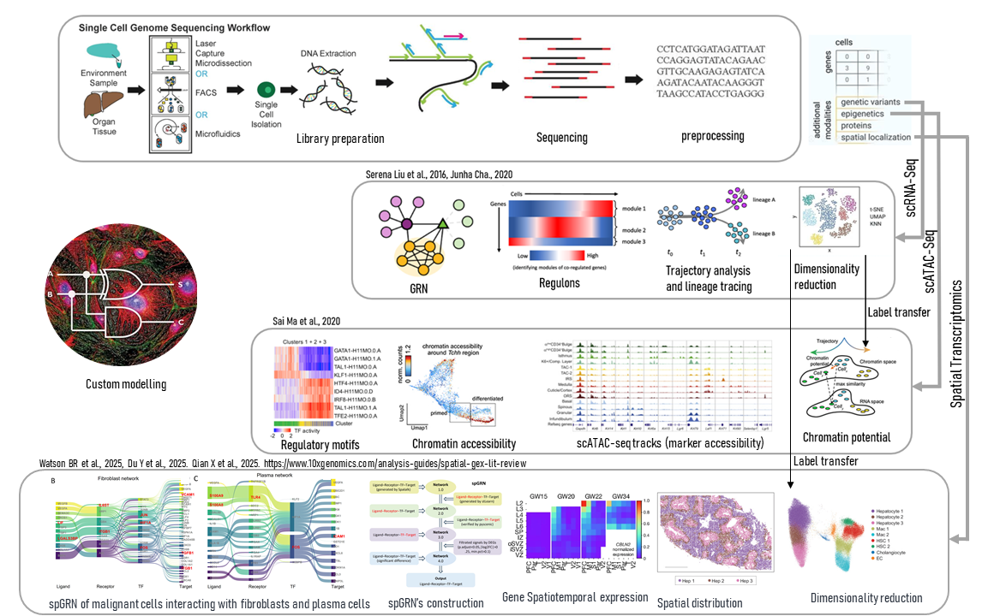
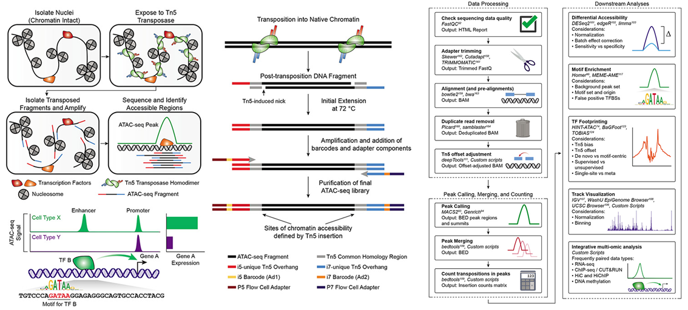
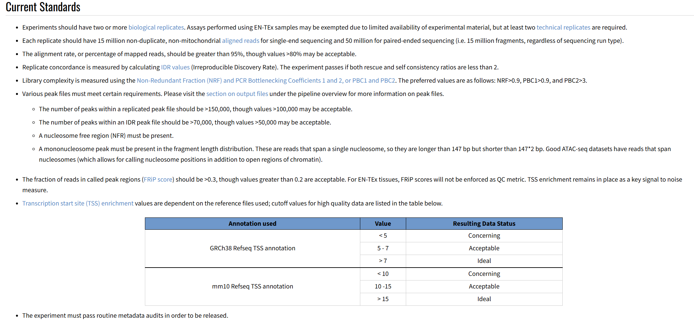
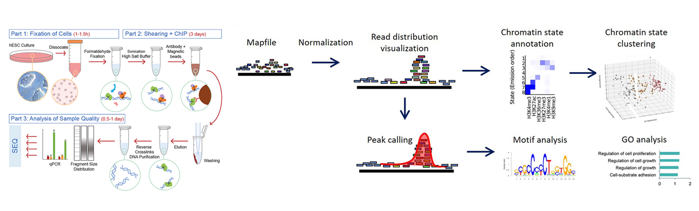
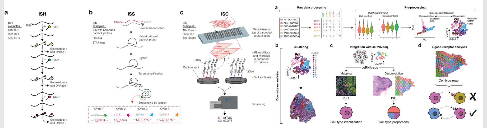
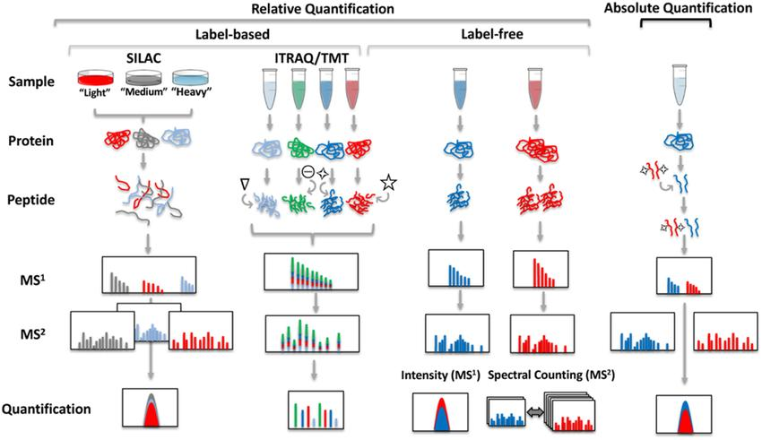
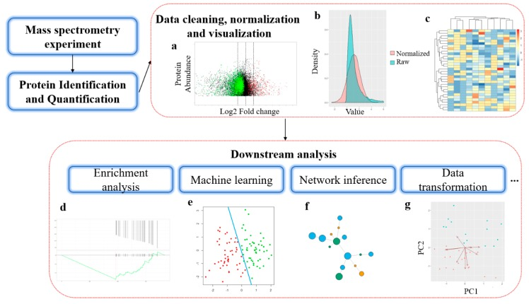

Summary of projects :
Single-Cell RNA-Seq
ATAC-Seq
ChIP-Seq
Bulk RNA-Seq
Proteomics
Comparative Genomics
Molecular Dynamics
Insilico peptide Optimization
This page highlights the projects and the technologies used in company standards. One strategy applies for all : What is the context? What is/are the research interest(s)? What technologies have been used? What are the available technologies/methods to respond to the given context and target the research interest? Design a pipeline, Development and implementation!
1. Evolution of the Cervical Region (10X Genomics): Exploratory analysis of molecular signatures underlying cellular differentiation in the neck and trunk. This study aims to understand cervical development from the trunk by integrating multi-species data to identify morphogens that drive species-specific neck patterning and the evolutionary innovation of the cervical region. Findings from this work may inform future therapies for congenital neck malformations.
2. Gut Microbiota and Stunted Growth (Parse Biosience): Investigating host–microbe interactions in the small intestine using single-cell genomics. Chronic undernutrition affects over 155 million children worldwide, leading to stunted growth and long-term developmental impairments. Even after nutritional rehabilitation, the gut microbiota of affected children often remains immature. This project aims to: decode how commensal bacteria modulate host responses to malnutrition; understand how host nutritional status shapes microbial ecology; and develop targeted microbial interventions to counteract growth retardation. The experimental approach combines gnotobiology, genetics, and functional genomics, utilizing model organisms colonized with defined bacterial communities, followed by sequencing and bioinformatic analysis.
Brief introduction to single-cell resolution exploratory analysis
There are many sequencing technologies available for single-cell studies, with 10X Genomics and Parse Biosciences being among the most prominent platforms. Library preparation methods vary depending on the technology used, but they all fundamentally rely on cell isolation, barcoding, and sequencing. Depending on the depth and scope of the study, samples can be multiplexed, which must be carefully considered during preprocessing and analysis to ensure accurate quantitative read distribution and attribution. I have designed a workflow summarized in Figure 1 that captures the key components and analytical environments surrounding single-cell resolution studies.

Fig 1. Exploratory analysis at single cell resolution level.
scRNA-Seq :
Single-cell RNA sequencing begins with tissue dissociation or environmental sample processing to obtain a single-cell suspension. Cells are isolated using methods such as FACS, laser capture microdissection, or microfluidic platforms. Following RNA extraction and library preparation, high-throughput sequencing generates transcriptomic profiles for individual cells.
The preprocessed data undergoes quality control and normalization, followed by dimensionality reduction techniques (UMAP, t-SNE) to visualize cellular heterogeneity. Gene regulatory network (GRN) reconstruction identifies regulons—sets of co-regulated genes controlled by shared transcription factors. Trajectory analysis and lineage tracing reveal developmental paths and cell state transitions. Clustering algorithms group cells into distinct populations based on gene expression signatures, enabling the identification of cell types, rare populations, and transitional states.
scATAC-Seq :
Single-cell ATAC sequencing maps chromatin accessibility landscapes at single-cell resolution. After cell isolation and nuclei extraction, the ATAC-seq protocol identifies open chromatin regions genome-wide through transposase-mediated fragmentation.
Computational analysis identifies accessible peaks and performs regulatory motif enrichment analysis to determine which transcription factors are likely active in each cell. Integration with gene expression data reveals correlations between chromatin accessibility and transcriptional activity. Marker accessibility analysis identifies cell-type-specific regulatory elements, while chromatin potential modeling predicts regulatory states that govern cell identity and differentiation trajectories.
Spatial Transcriptomics :
Spatial Transcriptomics can broadly be defined under two mainstreams : Sequenced-based methods and Imaged-based / Deconvolution methods.
Sequenced-based methods captures mRNA directly from tissue sections with spatial barcoding. methods likely Visium, Slide_seq, Sterio-seq, PIXEL-seq provides clean workflow for library preparations. Transcriptome-wide coverage is unbiased but also accounts for lower spatial resolution.
Imaging-based methods are great for in situ hybridiation approaches with methods like MERFISH, Merscope, Xenium, osmFISH, seqFISH as well as in situ sequencing with methods like FISSEQ, STARmap. other methods include antibody-based detection. Overal, Spatial transcriptomics should account for spatial gradients, spatial heterogeneity, cellular communication, tissue architecture, and function. Be careful of bias due to unaccounted tissue thickness.
Spatial transcriptomics captures gene expression profiles while preserving the native tissue architecture. Following tissue sectioning and spatial barcoding, sequencing generates spatially-resolved transcriptomic data.
Label transfer from scRNA-seq reference datasets annotates spatial spots with cell type identities and states previously defined through single-cell analysis. This integration enables spatiotemporal gene expression analysis, revealing how gene expression varies across tissue regions and potentially over developmental or disease progression timelines. Spatial distribution mapping visualizes cell type localization, cellular neighborhoods, and tissue organization patterns, providing insights into cell-cell interactions and microenvironmental influences on cellular behavior.
Custom Modelling
I love to always reserve space for custom modelling because I beleive it is essential for every research work. Today, there exist many high throughput technologies to respond to the challenges in the biological world. Considering a more common framwork where different scientist work on the same subject, it is more prominent for them to always have different perspectives, but the possible approaches to resolve this problem may generally be limited to the current technologies or the devolloper's approach and hence there's a high probability of acheiving the same results even with different perspectives. To break out of this loop, there's the need to utilize current approaches as stepping stones to model specific biological phenomens to model niches and responding accordingly to the research perpestives.
Following this strategy, I have applied two custom approaches in the host-microbe research project. One involved extracting the markers of cell population of interest and predicting their membrane localization (Here I used established methods for validation, modelled DNA structure to predict patterns specific only to membrane position via neural network). The other custom pipeline I involved the the prediction of proliferation speed. We obseved that some progenitor populations were slowing down in the small intestines for some conditions. We dug deeper in the properties of molecules governing cell-cycle life span, applied statistics and neural network extract the cell-cycle proliferation speed and validated with expected results from literature. In the research team of evo-devo, I developed a custom pipeline which involve the use of machine learnng to capture the biological network environment of protein-protein interactions (embeddign space). The next step is to combine this weights with differential gene expression to find the proportions of expression in each conditions driving morhphological interations.
Other than creating custom pipelines for modelling biologigal systems, I have equally developed many custom pipelines related to comprehensive visualizations
In our study, we adapted these analytical pipelines into a differential exploratory framework. This approach allowed us to systematically probe each experimental condition to identify the core cellular niches driving their distinct biology.
In an evolutionary-developmental (Evo-Devo) context, the analysis pinpointed a specific niche at the neck-trunk interface. This supports the hypothesis of a cervico-thoracic transition zone and illuminates the specific progenitor populations involved in limb bud formation from both anatomical regions.
In the study of stunting, the analysis revealed which specific cell populations are dysregulated by malnutrition and delineated the trajectory of their functional impairment over developmental time.
The assay for transposase-accessible chromatin using sequencing (ATAC-seq) provides a simple and scalable way to detect the unique chromatin landscape associated with a cell type and how it may be altered by perturbation or disease. It appears more and more in epigenetics studies. ATAC-Seq captures the accessibility of genomic areas in the chromosome which provides some robustness in defining the environment surrounding transcription start side.

Fig 2. Brief description of ATAC=Seq. Modified and printed from Grandi F et al., 2022
Chromatin structure is maintainded along side associated DNA binding proteins from nuclei isolation. It is exposed to the Tn5 transposase, simultaneously fragment the chromatin and insert primer sequences enabling amplification of these fragmented reads preparing them for sequencing. After sequencing, bioinformatic pipelines are applied to define the genomic regions accessible by the Tn5. The generally contain shorter reads and are counted as peaks. Longer reads are classified down the road as mononucleosome, dinucleosome based on the fragment lengths. The example pesented in cell type x and cell type y contains peaks in the promoter region. We also observe that cell type x has higher levels of expression of gene A, knowing the role of enhancers, we can hypothesise that the peaks equally observed at enhancer region just above the promoter drives these higer expression of gene A in cell type x. (Grandi F et al., 2022).
Thus, combining chromatin accessibility (ATAC-seq peaks) and gene expression data allow to infer functional regulatory logic. The coordinated openness of the promoter and its putative enhancer in cell type X suggests an active cis-regulatory module driving higher expression of Gene A
At the time of these studies (also see below), the current standards for running a successful ATAC_Seq pipeline is listed below.

Fig 3. ATAC-Seq current standards. read more here
In gene regulation studies, ChIP-Seq and ATAC-Seq have some similarities in thier pipeline approaches but their goals are different and using them rely much more on your research interest. ChIP-seq is a center method used for characterizing genome-wide DNA-binding profile for a protein of interest. It provides a highly specific, protein-centric view of the regulatory landscape, pinpointing where a particular factor—such as a histone modification or transcription factor—interacts with the genome. The quality of the data generated and also the analytical results is inherently dependent on the availability and quality of specific antibodies for the target protein.

Fig 4. ChIP-Seq working pipelines. Printed from Sullivan A et al., 2020 and Nakato R et al., 2021.>
As always, the first step is the library preparation stage begins by preparing samples which are then chemically fixed to preserve their protein-DNA interactions. Next, the fixed chromatin is physically broken into smaller pieces (sheared). The target protein, along with the DNA bound to it, is then selectively captured using a specific antibody attached to magnetic beads (immunoprecipitation). The isolated complexes are washed, eluted, and the DNA is purified. This DNA is then prepared for sequencing through steps such as amplification and adapter ligation, and is ultimately sequenced.
Once sequenced, the raw data undergoes a multi-step computational analysis. First, the sequenced fragments are mapped back to the genome. The data is then normalized for comparison, and the patterns of where the protein binds are visualized across the genome. Key binding regions, or "peaks," are identified. These peaks are analyzed to discover common DNA sequence patterns (motifs) and are annotated to understand the associated chromatin states, such as promoters or enhancers. Finally, groups of genes near these binding sites are analyzed to determine their biological roles, often revealing involvement in fundamental processes like cell proliferation, growth regulation, and cell adhesion
ChIP-Seq has become a prominent method to analyse genomic interaction of DNA-protein interactions. Researchers can pinpoint precise genomic binding sites, decipher the DNA codes recognized by proteins, and ultimately link these molecular events to critical biological functions and regulatory networks within the cell. There are interesting ChIP-Seq data databases that can be explored and integrated to provide more meaning to your research.
Spatial Transcriptomics today are most useful in the separation of meaningful patterns from complex biological system. Traditional RNA sequencing list the bricks, single-cell sequencing classifies the bricks and spatial transcriptiomics assembles them. It defines a spatiotemporal settings of molecular signatures within a biological system and enhance the elucidation of their functions. Fig 5 defines the canonical pipelines and the models behind these pipelines.

Fig 6 Representation of spatial transcriptomic workflow. Printed from Pineiro et al.
Firstly, it is important to know that there exist many databases for spatial transcriptomics which serve as essential resources for interpreting and contextualizing ST data. These databases, such as SOAR, SpatialDB, and SPASCER, provide curated collections of ST datasets across multiple tissues, developmental stages, and disease states, alongside integrated single-cell RNA-seq reference data that enable cell type deconvolution (label transfer also comes from single-cell datasets generated from personal experiments).
Additionally, these databases supply ligand-receptor interaction pairs critical for analyzing cell-cell communication, benchmark datasets for validating spatial domain identification and spatially variable genes, and pre-computed spatial patterns that help distinguish normal tissue architecture from disease-specific alterations. Without these databases, spatial transcriptomics data would remain difficult to interpret, lacking the biological context needed to transform raw spatial gene expression into meaningful insights about tissue organization, cellular interactions, and disease mechanisms.
Library preparation methods for spatial transcriptiomics depends on research interest as always, but the most prominent technologies are in situ hybridization (ISH) an imaged based, in situ sequencing (ISS), and in situ capturing (ISC) a sequenced based technologies. ISH and ISS to focus on the capturing of specific genes while ISC captures captures transcripts in an unbiased manner for transcriptiome-wide study. Targeted approaches can be sensitive to transcript present in the given tissue, but fewer unique genes can be assayed at once but with low effiency (only fractions of RNAs are captured). The resolution of these technologies refers to how exact of a location is retained for any particular transcript and can range from subcellular localization to a 55 μm-diameter capture spot with distinct x‒y spatial coordinates. One prominent challenge is all ST technologies currently suffer from the suboptimal depth and/or coverage of the transcripts assayed from intact tissue compared with scRNA-seq (Fig 6 left).
With ISH, we have signals from probes targeting short sequences of transcripts are propagated by consecutive rounds of hybridization, imaging, and probe stripping (seqFISH methods for example). ISS methods typically involve the hybridization and ligation of a barcoded padlock probe complementary to the RNA or cDNA of a target gene. Multiple rounds of target amplification and sequencing by ligation then allow for spatial resolution of the distinct target gene. ISC methods (captures in situ and sequenced ex situ) use capture spots containing an array of RT primers with distinct positional barcodes and poly-T sequences to capture mRNA transcripts. RT produces cDNAs that are extracted and sequenced using next-generation sequencing.
The connonical analysis pipeline is as similar to other sparced datasets analysis pipelines. The steps within preprocessing include but are not limited to quality control (QC), normalization, and dimensionality reduction. QC metrics such as the number of molecules per capture spot (counts per spot) and genes per spot indicate the depth of the data. Normalization accounts for differences in sequencing and capture depth across spots and is further complicated by variations in cellular density across the tissue. Preprocessing comes after raw data processing where raw sequencing data are processed into count matrices consisting of genes and capture spots. Next, Clustering groups similar spot transcriptomes, which can be transposed over the original tissue images for general interpretation after which, mapping and deconvolution combine scRNA-seq data with spatial transcriptomics data to localize cell subpopulations (label transfer). At this stage, ligand‒receptor analyses can be applied to the celltype maps generated from mapping and deconvolution. The proximity of cell types can help infer cell‒cell communication events (Fig 6 right). It is important to note that downstream analysis for ST data seeks to identify spatial domains with coherent gene expression, such as tissue niches and cell‒cell interactions which may accounts for neighboring spot information, tissue histology, and cellular morphology.
I choosed to define ChIP-Seq and ATAC-Seq above because they were used together with single-cell rna-seq to study the regulatory framwork underlying the research questions of out studies but they where equally used independently to rapidly establish the chromatin structure of two subprojects in this team. My main work in this team was applying stastiscal pipelines to decode the mechanisms driving the proteome of biological physiology most especially effects of biological rythmicity in physiology
The physiology of mamals follows a circiadian biological rythm, diurnal for humans and nocturnal for mice. The circadian project aims to study physiology accross both time frames to capture rythmicity niches and decode how they drive gene expressions and important mamal processes like metabolism in the liver. I applied statistical methods to correct for technical and biological noise as well as bias due to limit of detection to infer these functionalities from mass spectrometry data. input data were optain from ms/ms output. While mass spectrometry data remain inherently biased as a result of reasons ranging from sample handling to differences caused by the instrumentation, it has equally gained grounds in the field of proteomics to to capture and study proteins and enzymes (molecular workers) in a given sample (the liver in our case study).
A brief description of quantitative proteomics : It measures abundance changes of many proteins among multiple samples in a high-throughput manner. Results from such measurements provide information on how biological systems respond to environmental perturbations at a genomic scale. According to Zhou Li et al., 2-dimensional gel electrophoresis remains a ground method to achieve quantification by measuring staining intensities of protein spots but has a variety of limitation ranging from gel-to-gel variability, chalenges for gel spots containing multiple co-migrating proteins, maybe limited by the number of quantifiable proteins in a gel, a bias against membrane proteins, and a low sample throughput. A shotgun proteomics approach emmerged where proteins are typically digested using proteases into peptides. and further analyzed using liquid chromatography coupled with tandem mass spectrometry (LC−MS/MS). This approach is broadly classified into two label-free and and lablel based methods. The Label-free approach has no isotopic or chemical modification of proteins or peptides. Here, quantification can be achieved by correlating protein abundance with either mass spectrometric signal intensities of peptides or the number of MS/MS spectra matched to peptides and proteins (spectral counting). Label-free method is porpular because it allows simultaneous identification and quantification of proteins without a laborious and costly process of introducing stable isotopes into samples, and this approach is applicable to samples from any source. However, it is also limited in quantificationperformance in terms of accuracy, precision, and reproducibility. Label based methods was later developed on the basis of stable istope labeling including metabololic labeling, enzymatic labling and chemical labling. Metabolic labling involves the incorperation of stable heavy isotope in to proteins by growing in controlled media (an N-enriched nitrogen source or SILAC). allows for sample to grow in different states and combined at the cell level but highly sinsitive to biases in sample preparation. A better alternative for this limitation is the Chemical and Enzymatic methods which have emerged to label proteins or peptides using different isotopic tags. A handful of labeling possibilities are possible : labling via isotope-coded affinigy tags after lysis; enzymatic labeling at the C-terminus after digestion; or on the primary amine group at the N-terminus and lysine side chain using reductive dimethylation. Based on these stable-isotope labeling strategies, the abundance ratios of mass-different isotopic variants of peptides are determined using their signal intensities in full parent ion scans of the LC−MS/MS analysis. Abundance ratios of peptides are then used to infer abundance ratios of their parent proteins. Lastly, it is impportant to note that two similar Isobaric chemically labling approach has emerged, isobaric tag for relative and absolute quantification (iTRAQ) and tandem mass tag (TMT) and are both widely used. After proteolysis, samples are labeled separately with different isotopic variants of iTRAQ or TMT and are then combined for LC−MS/MS analysis. Both iTRAQ and TMT tags contain three functional parts: a reporter ion group, a mass normalization group, and an amine-reactive group which tag peptides; balances mass differences to keep them indistinguishable in full scans, and releases distinct reporter ions in MS/MS to quantify relative peptide abundance across up to eight samples. Multiplexing is a unique capability of iTRAQ and TMT in comparison to the other labeling techniques.

Fig 7 Brief description of quntitative proteomics library preparation. Printed from Creative Proteomics
Data preprocessing and quality control form the foundation of quantitative proteomics bioinformatics. Raw mass spectrometry data undergoes peptide identification through database searching (using tools like MaxQuant, Mascot, Sequest), where experimental spectra are matched against theoretical peptide sequences from protein databases like UniProt. This step includes filtering for false discovery rates, handling missing values through imputation methods (e.g., k-nearest neighbors or minimum value imputation for missing-not-at-random data), and normalization to correct for technical variation between samples (median normalization, quantile normalization, or variance stabilization). For label-free quantification, intensity-based approaches measure peptide peak areas, while isobaric labeling methods (TMT/iTRAQ) enable multiplexed quantification across multiple samples simultaneously. Quality metrics assess technical reproducibility, coefficient of variation, and sample correlation to ensure data reliability before downstream analysis.
Differential expression analysis and statistical modeling identify proteins that change significantly between experimental conditions. Statistical tests like t-tests, ANOVA, or linear models (implemented in tools like limma, MSstats, or Perseus) determine which proteins are differentially abundant, with multiple testing correction (Benjamini-Hochberg FDR) to control false positives. For example, comparing wild-type versus knockout samples might reveal 500 significantly changed proteins (FDR < 0.05, fold-change > 1.5), which are then visualized through volcano plots, heatmaps, or PCA plots to reveal overall expression patterns and sample clustering. Advanced methods like WGCNA (Weighted Gene Correlation Network Analysis) identify co-expressed protein modules, while time-series analysis tracks dynamic changes across circadian rhythms or developmental stages, revealing temporal expression patterns and identifying proteins that peak at specific timepoints.
Functional enrichment and pathway analysis translate protein lists into biological insights by integrating external knowledge databases. Tools like STRING, Reactome, KEGG, and Gene Ontology perform enrichment analysis to identify overrepresented biological processes, molecular functions, cellular components, and signaling pathways among differentially expressed proteins. For instance, if 50 upregulated proteins are enriched in "mitochondrial oxidative phosphorylation", this suggests altered energy metabolism in the experimental condition. Protein-protein interaction network analysis (using STRING, Cytoscape, or OmniPath) reveals functional modules and hub proteins that may serve as therapeutic targets, while integration with transcriptomics, metabolomics, or post-translational modification data provides multi-omics insights into regulatory mechanisms. Machine learning approaches increasingly enable biomarker discovery, predictive modeling of disease states, and systems-level understanding of complex biological processes through integration of proteomics with clinical metadata and other molecular layers.

Fig 8 Bioinformatics analysis pipeline. Printed fro Chen C et al.
VAir is a biotechnologie platform developing an innovative technology for the rapid detection of emergent partcicles in the environment. VAir was a spinoff project from Sup'Biotech High Biotechnology Engineering school in Paris.
Part of Subiotech's program is about encouraging students to think like entrepreneurs. From this, we combine multiple techonologies from biophysics, molecular biology and bioinformatics to desing an effective technologies that samples the flow of air in a close environment to diagnose particles that may be harmful to the human health.
As part of my Entrepreuneurship program, we had been working on VAir before but simply as a course with the aim of validating each year, We officially began working on in in January 2023 with the aim of creating a startup program that seeks to solve the problem of of harmfull and emerging pariticles in the environment especially taking into account the increasing pressense of humans in extreme environments. After one year of conception, desing and implementation, our preliminary results were not marture enough to get us into Genopole and Polytechnique incubation program, but landed us a position at the Descartes Developpement et Innovation incubation hub at Marne-la-Vallée in Paris. Their rich startup ecosystems provided us with neccessary facilities like Fablab, freepass to conferences, connections which we leveraged to further improve our laboratoy experiments and market research. At the end of this 8 months period, our results were rich enough to get us admited into the polytechnique incubation program (X-hub) which we continued to developed this technology. As an international student with many finantial difficuties, at the end of my studies, I faced so many difficulties with keeping up with bills, paying my tuition debts and entrepreuneuring without any income at the time. I had to survive in that present moment in order to keep my dreams alive so I dropped, it was a painful descision but I needed to do it.
Within my time as lead in VAir, uniting technological principles accross different fields for one purpose was a challenging process but I loved every ounce of it. Because I have an engineering background with excellent grades in phyical sciences, and mathematics, it was very comprehensive for me to use mathematical and pysical models to model physical quantities. Most of my days were all about scanning literature to extract information to develop protocols needed to characterize molecular particles (ligands, receptors and target particles), effective autogonal conjugation (receptor immobilization and functionalization) and sensor characterization via electromagnetic fields. The rest but not all of my other days include computational experimentation leveraging atomic force fields to study the stabilities of particle systems via molecular dynamics, testing many combinations based on litereature review results, and keeping tract of most stable molecule combinations and finally testing them on the Fablab for real time validation. Finally, attending conferences, seminars and biotech expositions which always organized by my coleaque Ekaterina Kukhtenko the project leader responsible for working on market research and the visibility of the project.
Ma, Sai et al. "Chromatin Potential Identified by Shared Single-Cell Profiling of RNA and Chromatin." Cell vol. 183,4 (2020): 1103-1116.e20. doi:10.1016/j.cell.2020.09.056
Liu, Serena, and Cole Trapnell. "Single-cell transcriptome sequencing: recent advances and remaining challenges." F1000Research vol. 5 F1000 Faculty Rev-182. 17 Feb. 2016, doi:10.12688/f1000research.7223.1
Cha, Junha, and Insuk Lee. "Single-cell network biology for resolving cellular heterogeneity in human diseases." Experimental & Molecular Medicine vol. 52,11 (2020): 1798-1808. doi:10.1038/s12276-020-00528-0
Slovin, Shaked et al. "Single-Cell RNA Sequencing Analysis: A Step-by-Step Overview." Methods in Molecular Biology (Clifton, N.J.) vol. 2284 (2021): 343-365. doi:10.1007/978-1-0716-1307-8_19
Luecken, Malte D, and Fabian J Theis. "Current best practices in single-cell RNA-seq analysis: a tutorial." Molecular Systems Biology vol. 15,6 e8746. 19 Jun. 2019, doi:10.15252/msb.20188746
Cheng, Changde et al. "A Review of Single-Cell RNA-Seq Annotation, Integration, and Cell-Cell Communication." Cells vol. 12,15 1970. 30 Jul. 2023, doi:10.3390/cells12151970
https://holab-hku.github.io/Fundamental-scRNA/background.html
Du, Yiwen et al. "Construction of Gene Regulatory Networks Based on Spatial Multi-Omics Data and Application in Tumor-Boundary Analysis." Genes vol. 16,7 821. 13 Jul. 2025, doi:10.3390/genes16070821
Watson, Brianna R et al. "Spatial transcriptomics of healthy and fibrotic human liver at single-cell resolution." Nature Communications vol. 16,1 319. 2 Jan. 2025, doi:10.1038/s41467-024-55325-4
https://www.10xgenomics.com/analysis-guides/spatial-gex-lit-review
Qian, Xuyu et al. "Spatial transcriptomics reveals human cortical layer and area specification." Nature vol. 644,8075 (2025): 153-163. doi:10.1038/s41586-025-09010-1
Grandi, Fiorella C et al. "Chromatin accessibility profiling by ATAC-seq." Nature Protocols vol. 17,6 (2022): 1518-1552. doi:10.1038/s41596-022-00692-9
Sullivan, Adrienne E, and Silvia D M Santos. "An Optimized Protocol for ChIP-Seq from Human Embryonic Stem Cell Cultures." STAR Protocols vol. 1,2 100062. 18 Sep. 2020, doi:10.1016/j.xpro.2020.100062
Nakato, Ryuichiro, and Toyonori Sakata. "Methods for ChIP-seq analysis: A practical workflow and advanced applications." Methods (San Diego, Calif.) vol. 187 (2021): 44-53. doi:10.1016/j.ymeth.2020.03.005
Piñeiro, Arianna J et al. "Research Techniques Made Simple: Spatial Transcriptomics." The Journal of Investigative Dermatology vol. 142,4 (2022): 993-1001.e1. doi:10.1016/j.jid.2021.12.014
Danishuddin et al. "Spatial transcriptomics data and analytical methods: An updated perspective." Drug Discovery Today vol. 29,3 (2024): 103889. doi:10.1016/j.drudis.2024.103889
Li, Zhou et al. "Systematic comparison of label-free, metabolic labeling, and isobaric chemical labeling for quantitative proteomics on LTQ Orbitrap Velos." Journal of Proteome Research vol. 11,3 (2012): 1582-90. doi:10.1021/pr200748h
https://www.creative-proteomics.com/resource/label-free-vs-labe-proteomics.htm
Chen, Chen et al. "Bioinformatics Methods for Mass Spectrometry-Based Proteomics Data Analysis." International Journal of Molecular Sciences vol. 21,8 2873. 20 Apr. 2020, doi:10.3390/ijms21082873
Wang, J., Huang, Y., Lu, F. et al. Benchmarking informatics workflows for data-independent acquisition single-cell proteomics. Nature Communications 16, 10276 (2025). https://doi.org/10.1038/s41467-025-65174-4
Wang, Xu et al. "Integrative multi-omics approaches to explore immune cell functions: Challenges and opportunities." iScience vol. 26,4 106359. 9 Mar. 2023, doi:10.1016/j.isci.2023.106359